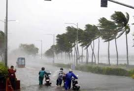
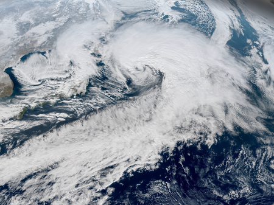
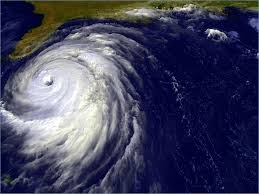
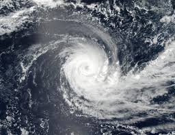

Cyclones
In meteorology, a cyclone is a large scale air mass that rotates around a strong center of low atmospheric pressure. Cyclones are characterized by inward spiraling winds that rotate about a zone of low pressure. The largest low-pressure systems are polar vortices and extratropical cyclones of the largest scale (the synoptic scale). Warm-core cyclones such as tropical cyclones and subtropical cyclones also lie within the synoptic scale. Mesocyclones, tornadoes, and dust devils lie within smaller mesoscale. Upper level cyclones can exist without the presence of a surface low, and can pinch off from the base of the tropical upper tropospheric trough during the summer months in the Northern Hemisphere. Cyclones have also been seen on extraterrestrial planets, such as Mars, Jupiter, and Neptune. Cyclogenesis is the process of cyclone formation and intensification. Extratropical cyclones begin as waves in large regions of enhanced mid-latitude temperature contrasts called baroclinic zones. These zones contract and form weather fronts as the cyclonic circulation closes and intensifies. Later in their life cycle, extratropical cyclones occlude as cold air masses undercut the warmer air and become cold core systems. A cyclone's track is guided over the course of its 2 to 6 day life cycle by the steering flow of the subtropical jet stream. Weather fronts mark the boundary between two masses of air of different temperature, humidity, and densities, and are associated with the most prominent meteorological phenomena. Strong cold fronts typically feature narrow bands of thunderstorms and severe weather, and may on occasion be preceded by squall lines or dry lines. Such fronts form west of the circulation center and generally move from west to east; warm fronts form east of the cyclone center and are usually preceded by stratiform precipitation and fog. Warm fronts move poleward ahead of the cyclone path. Occluded fronts form late in the cyclone life cycle near the center of the cyclone and often wrap around the storm center. Tropical cyclogenesis describes the process of development of tropical cyclones. Tropical cyclones form due to latent heat driven by significant thunderstorm activity, and are warm core. Cyclones can transition between extratropical, subtropical, and tropical phases. Mesocyclones form as warm core cyclones over land, and can lead to tornado formation.[11] Waterspouts can also form from mesocyclones, but more often develop from environments of high instability and low vertical wind shear. In the Atlantic and the northeastern Pacific oceans, a tropical cyclone is generally referred to as a hurricane (from the name of the ancient Central American deity of wind, Huracan), in the Indian and south Pacific oceans it is called a cyclone, and in the northwestern Pacific it is called a typhoon. The growth of instability in the vortices is not universal. For example, the size, intensity, moist-convection, surface evaporation, the value of potential temperature at each potential height can affect the nonlinear evolution of a vortex.
Extratropical cyclones
An extratropical cyclone is a synoptic scale of low-pressure weather system that does not have tropical characteristics, as it is connected with fronts and horizontal gradients (rather than vertical) in temperature and dew point otherwise known as "baroclinic zones". "Extratropical" is applied to cyclones outside the tropics, in the middle latitudes. These systems may also be described as "mid-latitude cyclones" due to their area of formation, or "post-tropical cyclones" when a tropical cyclone has moved (extratropical transition) beyond the tropics. They are often described as "depressions" or "lows" by weather forecasters and the general public. These are the everyday phenomena that, along with anti-cyclones, drive weather over much of the Earth. Although extratropical cyclones are almost always classified as baroclinic since they form along zones of temperature and dewpoint gradient within the westerlies, they can sometimes become barotropic late in their life cycle when the temperature distribution around the cyclone becomes fairly uniform with radius. An extratropical cyclone can transform into a subtropical storm, and from there into a tropical cyclone, if it dwells over warm waters sufficient to warm its core, and as a result develops central convection. A particularly intense type of extratropical cyclone that strikes during winter is known colloquially as a nor'easter.
Polar low
A polar low is a small-scale, short-lived atmospheric low-pressure system (depression) that is found over the ocean areas poleward of the main polar front in both the Northern and Southern Hemispheres. Polar lows were first identified on the meteorological satellite imagery that became available in the 1960s, which revealed many small-scale cloud vortices at high latitudes. The most active polar lows are found over certain ice-free maritime areas in or near the Arctic during the winter, such as the Norwegian Sea, Barents Sea, Labrador Sea and Gulf of Alaska. Polar lows dissipate rapidly when they make landfall. Antarctic systems tend to be weaker than their northern counterparts since the air-sea temperature differences around the continent are generally smaller[citation needed]. However, vigorous polar lows can be found over the Southern Ocean. During winter, when cold-core lows with temperatures in the mid-levels of the troposphere reach −45 °C (−49 °F) move over open waters, deep convection forms, which allows polar low development to become possible. The systems usually have a horizontal length scale of less than 1,000 kilometres (620 mi) and exist for no more than a couple of days. They are part of the larger class of mesoscale weather systems. Polar lows can be difficult to detect using conventional weather reports and are a hazard to high-latitude operations, such as shipping and gas and oil platforms. Polar lows have been referred to by many other terms, such as polar mesoscale vortex, Arctic hurricane, Arctic low, and cold air depression. Today the term is usually reserved for the more vigorous systems that have near-surface winds of at least 17 m/s.
Tropical cyclones
A subtropical cyclone is a weather system that has some characteristics of a tropical cyclone and some characteristics of an extratropical cyclone. They can form between the equator and the 50th parallel. As early as the 1950s, meteorologists were unclear whether they should be characterized as tropical cyclones or extratropical cyclones, and used terms such as quasi-tropical and semi-tropical to describe the cyclone hybrids. By 1972, the National Hurricane Center officially recognized this cyclone category. Subtropical cyclones began to receive names off the official tropical cyclone list in the Atlantic Basin in 2002. They have broad wind patterns with maximum sustained winds located farther from the center than typical tropical cyclones, and exist in areas of weak to moderate temperature gradient. Since they form from extratropical cyclones, which have colder temperatures aloft than normally found in the tropics, the sea surface temperatures required is around 23 degrees Celsius (73 °F) for their formation, which is three degrees Celsius (5 °F) lower than for tropical cyclones. This means that subtropical cyclones are more likely to form outside the traditional bounds of the hurricane season. Although subtropical storms rarely have hurricane-force winds, they may become tropical in nature as their cores warm.
Tropical Cyclones In Myanmar
There were two famous cyclones in Myanmar which caused great damage and many deaths. They are;
---------------
1. Cyclone Mala
2. Cyclone Nargis
See more about myanmar tropical cyclones by clicking ----